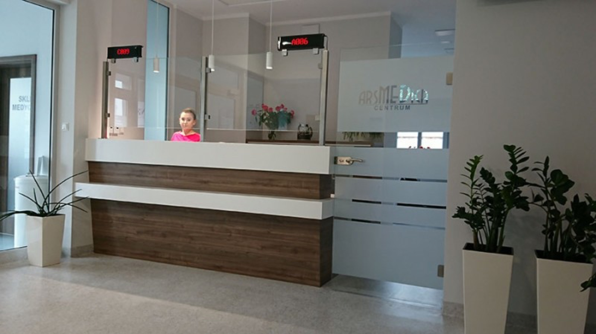

Strona główna
Prywatne gabinety specjalistyczne
- Ortopeda dr n. med. Piotr Wojciechowski - przyjęcia we wtorki od godziny 18.00, rej. 500 308 305
- Neurolog dr n. med. Karolina Tworek rej. 500 308 305
- Kardiolog lek. Agata Serwecińska - przyjęcia w poniedziałki rej. 500 308 305
- Fizjoterapia uroginekologiczna mgr Aneta Kliber rej. tel 881 693 188
- Lekarz Medycyny Pracy i Transportu lek. Piotr Lisowski od poniedziałku do czwartku rej. 500 308 305
- REJESTRACJA DO W/W LEKARZY : od poniedziałku do piątku w godz. 8:00 do 16:00 pod numerem tel. 500 308 305
- POZOSTALI SPECJALIŚCI:
- Psychiatra lek. Jadwiga Liberowicz - Przybył - porady poniedziałek i środa; rej. tel. 692 685 922
- Chirurg naczyniowy dr n. med. Jarosław Kasperczak - przyjęcia poniedziałek i czwartek od godz. 16;00; rej. tel. 607 051 894
- Masażystka: Gohar Meliksetyan zabiegi od poniedziałku do piątku od godz 12:00 rej. tel. 880 683 065
- Poradnia Psychologii Pracy mgr Izabela Płucienniczak - poniedziałek 08:00- 15:00; czwartek 12:00 - 18:00 rej. tel. 503 114 595
- Psycholog mgr Justyna Prus - Buczak - rej. tel. 601 775 701
- Dietetyk Wiktoria Szczęsna rej. tel. 791 755 792
- Pulmonolog lek. Waldemar Bakalarz w czwartki rej. tel. 500 308 305
- Fizjoterapia Urologiczna mgr. Aneta Kliber rej. tel 881693188
Zdjęcia nowej siedziby
